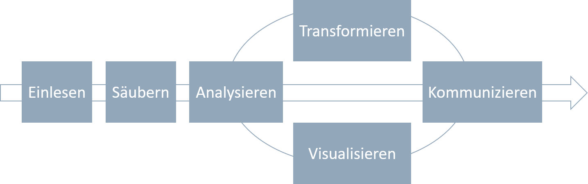
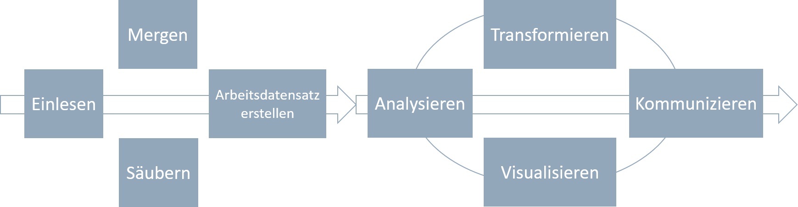

 Quelle: Vgl. R4DS
In der Praxis geht es meist nicht so geradlinig zu. Insbesondere bei großen Datensätzen kann es sinnvol sein, einige Zwischenschritte einzubauen.
Bei der Arbeit mit Mikrodatensätzen müssen in der Regel verschiedene Datensätze zu einem Arbeitsdatensatz zusammengeführt werden.
Das Zusammenführen der Daten kann, je nach Größe der Datensätze einige Zeit in Anspruch nehmen. Um zu Vermeiden, den Arbeitsdatensatz ständig auf’s Neue zusammenzufügen, sollte ein Arbeitsdatensatz gespeichert werden.
An diesem sollten, außer dem Zusammenführen der Daten, noch keine Änderungen vergenommen worden sein. Das Verändern der Daten erfolgt erst in einem späteren Schritt. Geht im Verlaufe der Datenanalyse etwas schief und der Arbeitsdatensatz wird ausversehen überschrieben, kann schnell die Erstversion wiederhergestellt werden. Ein erneutes Zusammenstellen der Daten wird vermieden.
Ein effizienter Workflow bei der Analyse großer Datenmengen aus verschiedenen Quellen könnte also so aussehen:
 Quelle: Adaptiert von R4DS
## Beispielordner_Mikrodatenanalyse
## +-- 01_Daten.R
## +-- 02_Analyse.R
## +-- data_in
## | +-- phealth.dta
## | +-- pl.sav
## | \-- ppathl.dta
## +-- data_out
## +-- graphs_out
## \-- Projekt_Mikrodatenanalyse.RprojDer Projektordner Beispielordner_Mikrodatenanalyse enthält alle relevanten Dateien. In der ersten Ebene liegt die .Rproj-Datei (Projekt_Mikrodatenanalyse.Rproj), .R-Dateien und Unterordner.
Ausgehend vom Projektordner, in dem die .Rproj-Datei liegt, können beliebige Unterordner gebildet werden. Alternativ zur obigen Struktur könnten die .R-Dateien auch in einen eigenen Ordner verschoben werden.
Andere Beispiele für Ordnerstrukturen finden sich zum Beispiel hier:
Mikrodaten werden in der Regel (noch) nicht in einem R-Datenformat ausgeliefert. Häufig sind zunächst nur dta-Dateien (Stata) oder sav-Dateien (SPSS) verfügbar.
###Lösung:
Das Paket haven ermöglicht das Einlesen fremder Dateitypen.
#Einmalig installieren
install.packages("haven")#Laden
library(haven)#Liste aller Funktionen im Paket haven
ls("package:haven")## [1] "as_factor" "format_tagged_na"
## [3] "is.labelled" "is_tagged_na"
## [5] "labelled" "labelled_spss"
## [7] "na_tag" "print_labels"
## [9] "print_tagged_na" "read_dta"
## [11] "read_por" "read_sas"
## [13] "read_sav" "read_spss"
## [15] "read_stata" "read_xpt"
## [17] "tagged_na" "vec_arith.haven_labelled"
## [19] "write_dta" "write_sas"
## [21] "write_sav" "write_xpt"
## [23] "zap_empty" "zap_formats"
## [25] "zap_label" "zap_labels"
## [27] "zap_missing" "zap_widths"Für unsere Mikrodatenanalyse nutzen wir drei Datensätze: ppathl.dta, pl.sav, phealth.dta. Wir lesen diese mit den Befehlen
ppathl <- read_dta("Beispielordner_Mikrodatenanalyse/data_in/ppathl.dta")
pl <- read_sav("Beispielordner_Mikrodatenanalyse/data_in/pl.sav")
phealth <- read_dta("Beispielordner_Mikrodatenanalyse/data_in/phealth.dta")
ppathl## # A tibble: 12,922 x 4
## persnr jahr sex weight
## <dbl> <dbl> <dbl+lbl> <dbl>
## 1 500575 2001 1 [weiblich] 467.
## 2 279067 2003 1 [weiblich] 860.
## 3 238927 2004 0 [maenlich] 343.
## 4 240595 2004 0 [maenlich] 869.
## 5 88977 2003 1 [weiblich] 367.
## 6 254006 2001 0 [maenlich] 314.
## 7 344281 2003 1 [weiblich] 892.
## 8 666151 2002 0 [maenlich] 908.
## 9 383792 2001 0 [maenlich] 793.
## 10 482355 2002 1 [weiblich] 648.
## # ... with 12,912 more rowspl## # A tibble: 12,922 x 6
## persnr jahr bildung anz_kind bula region
## <dbl> <dbl> <dbl> <dbl> <dbl> <chr>
## 1 294354 2001 10.5 0 11 Land
## 2 414129 2001 12 0 4 Stadt
## 3 417490 2002 10.5 2 2 Land
## 4 334726 2000 9 0 14 Stadt
## 5 569347 2001 11 2 15 Stadt
## 6 471291 2003 18 0 11 Land
## 7 663550 2004 11 0 15 Stadt
## 8 587268 2001 NA 0 6 Stadt
## 9 75033 2000 13 1 13 Stadt
## 10 180832 2003 12 0 13 Land
## # ... with 12,912 more rowsphealth## # A tibble: 12,276 x 6
## persnr jahr gesund_org gesund_std lebensz_org lebensz_std
## <dbl> <dbl> <dbl+lbl> <dbl> <dbl+lbl> <dbl>
## 1 235585 2000 4 [Gut] 0.567 5 [5 Zufrieden: Skala 0~ -1.23
## 2 74141 2000 3 [Zufriedenst~ -0.464 6 [6 Zufrieden: Skala 0~ -0.659
## 3 512655 2001 4 [Gut] 0.567 6 [6 Zufrieden: Skala 0~ -0.659
## 4 259440 2003 3 [Zufriedenst~ -0.464 8 [8 Zufrieden: Skala 0~ 0.477
## 5 527534 2002 4 [Gut] 0.567 9 [9 Zufrieden: Skala 0~ 1.05
## 6 510444 2001 1 [Schlecht] -2.53 5 [5 Zufrieden: Skala 0~ -1.23
## 7 396886 2001 2 [Weniger_gut] -1.49 6 [6 Zufrieden: Skala 0~ -0.659
## 8 246747 2002 5 [Sehr_gut] 1.60 10 [10 Zufrieden: Skala ~ 1.61
## 9 544752 2001 4 [Gut] 0.567 6 [6 Zufrieden: Skala 0~ -0.659
## 10 152915 2000 5 [Sehr_gut] 1.60 7 [7 Zufrieden: Skala 0~ -0.0909
## # ... with 12,266 more rows